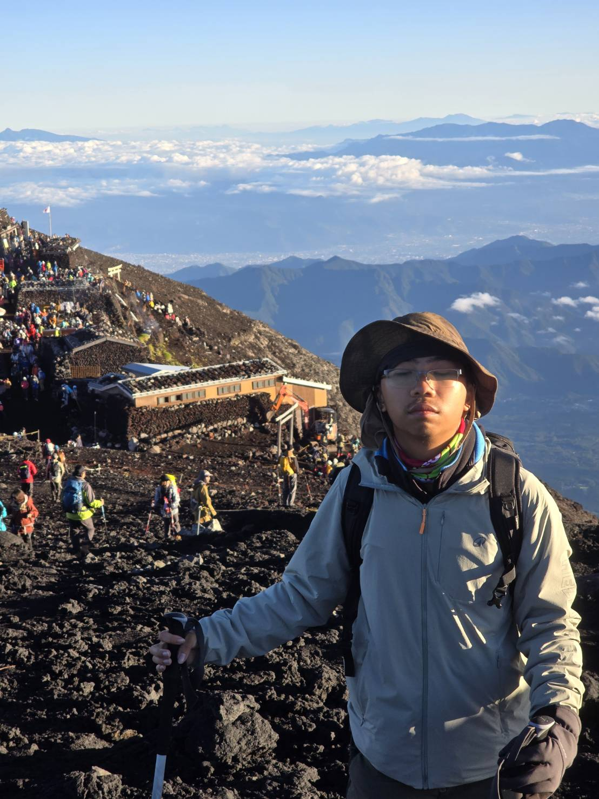

程式與網頁
從程式邏輯出發，探索網頁互動與前後端整合，讓功能回應實際需求。

我喜歡資訊技術，更喜歡看到一個想法，慢慢變成真正能使用的東西。
從系統實作到一起學習，我關心的不只是工具怎麼用，也關心如何把複雜的問題拆成可以前進的小步驟。我希望把自己的實作經驗整理、分享，讓更多人有機會完成自己的數位作品。
螢幕之外，我喜歡爬山，也喜歡閱讀、旅行與歷史。走進山裡，是我探索世界、感受不同風景的另一種方式。
MY TOOLBOX
以專案串起技術，
也把實作經驗帶進共學。
從程式邏輯出發，探索網頁互動與前後端整合，讓功能回應實際需求。
關注資料儲存、登入流程與網站發布，把本機上的作品帶到可分享的網址。
把 AI 當成協作工具，練習清楚描述需求、閱讀程式、除錯與驗證結果。
SELECTED WORK / GITHUB
從生活裡的問題出發，
用工具、程式與教材回應。
八堂任務式資訊應用教材，從行事曆實作開始學習。
個人數位名片、教師教案與學生實作講義。
運用語音辨識與 Google Sheets API 登記成績。
以 Python 探索指令集與模組化開發。
記錄實作與登山日常的個人網站。
02 / EXPERIENCE
讓技術有用途，讓學習有夥伴。
參與獎學金申請與審核系統開發，接觸前後端整合、資料管理與流程規劃。這段經驗也成為我思考資訊應用教學的起點：如何從一個需求，逐步完成可使用的系統。
透過組織日文共學圈，累積與不同程度的夥伴一起學習的經驗。也讓我更重視提問、討論與互相陪伴，而不只是單向分享知識。
03 / TEACHING IDEAS
我希望讓同學不只是學會使用資訊工具，而是相信自己有能力運用技術，把生活中的想法變成實際作品。
從興趣出發、把問題拆小，再透過討論與實作逐步前進。讓沒有程式背景的同學，也能找到自己的起點。
認識 HTML、CSS 與版面設計，先做出能介紹自己的頁面。
成果：個人介紹頁練習描述需求、理解修改內容，搭配 Git 保存每一步。
成果：加入網站互動認識部署、資料庫與 API，用 Supabase、Vercel 串起應用。
成果：留言板或報名表從標籤寫入網址開始，將手機感應連到自己的網站。
成果：NFC 數位名片整理作品、檢查操作流程，分享設計想法與實作心得。
成果：可展示的小型應用這條路線是整體教學規劃；目前已整理生活開發實驗室與 NFC 數位名片教材，歡迎到作品集查看。實體 NFC 讀寫仍須以設備驗收；身分驗證與簽到判定需要另外設計後端機制。
04 / BEYOND THE SCREEN
除了寫程式，我也喜歡爬山。
喜歡走在山徑上，也喜歡看見眼前展開的山景與雲海。這裡記錄我的另一面：對戶外的喜愛，以及持續探索的好奇心。
LET’S CONNECT
想交流作品、討論資訊應用或分享登山日常，可以在這裡找到我。